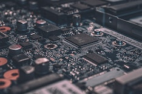

The Bachelor of Applied Technology Degree (BAT) in Computer and Information Technologies (CIT) prepares
students
for successful careers in the field of CIT. Coursework is balanced between theoretical and technical
competencies associated with the CIT profession to prepare graduates for a number of demands placed on CIT
professionals. The degree is designed to prepare students with relevant, technical knowledge of CIT
practices,
in order to provide solutions for real-world problem and technical support for computer-based information
systems. Technology-oriented coursework will form the core requirements for this program, with an emphasis
on
the application and implementation of current technologies.
The program’s objectives include promoting academic development in a number of ways. The program offers a
required capstone course that will enhance the educational experience and employment potential for students.
The
program will also include a strong professional component to develop skills in technical communication,
ethics
and group work. Students graduating from the program will be prepared to enter the private sector as well as
continue their education in a graduate program.
Tuition for the computer and information technologies competency-based courses are $850 per term. Students
are
able to accelerate through as many courses per term as possible, provided they demonstrate mastery of the
subjects. A student entering the program with no prior college credit should be able to complete the degree
in
three years at a significantly reduced cost.
Click on the small images to change the larger image, above.
